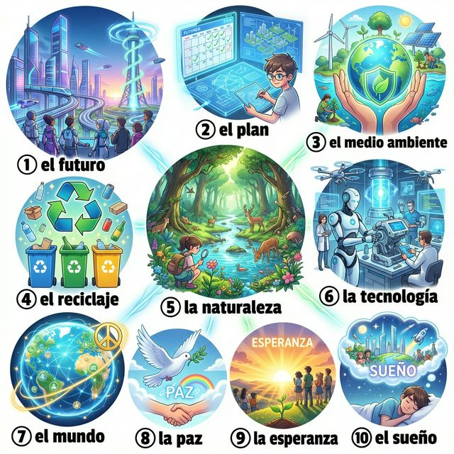

Cervantes: §15 미래 계획 및 §16 환경과 세계 기초
Hacia el futuro (미래를 향해)
우리가 지금까지 배운 스페인어는 과거와 현재에 머물지 않습니다. 이제 여러분은 자신이 꿈꾸는 미래, 하고 싶은 일, 그리고 우리가 함께 살아가는 소중한 지구에 대해 이야기할 준비가 되었습니다. 이번 마지막 장에서는 'Ir a + 동사원형' 패턴을 통해 가까운 미래의 계획을 간단하고 확실하게 표현하는 방법을 배웁니다. 또한 환경 보호와 관련된 기초 어휘를 익히며, 더 나은 세상을 위해 우리가 할 수 있는 일들에 대해 생각해 봅니다. 여러분의 스페인어 여정은 이제 시작입니다!
학습 목표
우리가 꿈꾸는 내일과 우리가 지켜야 할 지구입니다. 희망적인 미래의 이미지를 보며 어휘를 익혀보세요.

| # | Spanish | English Bridge | Korean Tip |
|---|---|---|---|
| 1 | el futuro | Future ✅ | 미래 |
| 2 | el plan | Plan ✅ (Perfect Cognate) | 계획 |
| 3 | el medio ambiente | Ambient (related) | 환경 |
| 4 | el reciclaje | Recycling ✅ | 재활용 |
| 5 | la naturaleza | Nature ✅ | 자연 |
| 6 | la tecnología | Technology ✅ | 기술 |
| 7 | el mundo | — | 세상 / 세계 |
| 8 | la paz | — | 평화 |
| 9 | la esperanza | — | 희망 |
| 10 | el sueño | — | 꿈 (잠 또는 장래 희망) |
✅ 표시된 단어는 영어와 어원의 뿌리가 같은 'Cognates'입니다.
미래의 계획과 소망을 말할 때 사용하는 핵심 패턴입니다.
A. 미래 계획 말하기 (Planes)
B. 소망과 의도 표현하기 (Deseos)
가장 실용적인 미래 표현인 'Ir a + 동사원형'을 정복해 봅시다.
'Ir' 동사를 주어에 맞게 변형하고 a를 쓴 뒤, 하고 싶은 동작을 동사원형으로 둡니다.
| 인칭 | Ir | a + 동사원형 | 예시 |
|---|---|---|---|
| Yo | voy | a estudiar | I am going to study |
| Tú | vas | a trabajar | You are going to work |
| Él/Ella/Ud. | va | a comer | He/She is going to eat |
| Nosotros/as | vamos | a viajar | We are going to travel |
| Vosotros/as | vais | a bailar | You all are going to dance |
| Ellos/Ellas/Uds. | van | a descansar | They are going to rest |
Korean Tip!
이미 결정된 계획이나 아주 조만간 일어날 일에 대해 확신을 가지고 말할 때 씁니다. 만약 "나 이제 밥 먹으러 가"라고 할 때는 "Voy a comer"라고 하면 완벽합니다!
스페인은 환경을 지키기 위해 어떤 노력을 하고 있을까요?
España es pionera en el uso de energías renovables. Si viajas por el país, vas a ver muchos parques eólicos (풍력 발전소) y campos de energía solar. Los españoles valoran mucho su naturaleza diversa, desde las playas del Mediterráneo hasta los bosques del norte.
En las ciudades, el reciclaje es parte de la vida diaria: hay contenedores de diferentes colores para el vidrio, el papel, el plástico y los residuos orgánicos. Además, el uso de la bicicleta y el transporte público es cada vez más común para reducir la contaminación. El objetivo es crear un futuro más verde y sostenible para las próximas generaciones. ¡Tú también vas a contribuir a este cambio aprendiendo y compartiendo estas ideas!
[한국어 번역]
스페인은 재생 에너지 사용의 선구자입니다. 나라를 여행하다 보면 많은 풍력 발전소와 태양광 에너지 단지를 보게 될 것입니다. 스페인 사람들은 지중해의 해변부터 북부의 숲까지 자신들의 다양한 자연을 매우 소중히 여깁니다.
도시에서 재활용은 일상의 일부입니다. 유리, 종이, 플라스틱, 유기물 폐기물을 위한 다양한 색깔의 컨테이너가 있죠. 또한 오염을 줄이기 위해 자전거와 대중교통 이용이 점점 더 일반화되고 있습니다. 목표는 다음 세대를 위해 더 푸르고 지속 가능한 미래를 만드는 것입니다. 여러분도 이러한 아이디어들을 배우고 공유함으로써 이 변화에 기여하게 될 것입니다!
A. Choose the correct form of 'Ir a' (알맞은 형태로 문장을 완성하세요)
B. Arrange the words to make a sentence (단어를 조합하여 미래 계획 문장을 만드세요)
C. 번역 연습 (미래 및 소망 표현을 활용하세요)
Mis sueños para el próximo año (내년의 나의 꿈들)
¡Hola a todos! Este ha sido un gran curso de español. El próximo año tengo muchos planes. Primero, voy a viajar a Madrid para practicar mi español con gente nativa. Después, voy a estudiar ingeniería ambiental porque quiero ayudar al medio ambiente. Mi sueño es trabajar en una empresa de energía solar. También voy a reciclar en casa todos los días. Sé que el mundo tiene problemas, 하지만 tengo esperanza. Me gustaría conocer a muchas personas de diferentes países y compartir mis ideas. ¡El futuro va a ser brillante! ¿Y tú? ¿Qué vas a hacer para cambiar el mundo?
Questions:
[한국어 번역]
모두들 안녕하세요! 정말 멋진 스페인어 과정이었습니다. 내년에는 많은 계획이 있어요. 우선, 현지인들과 스페인어를 연습하기 위해 마드리드로 여행을 갈 거예요. 그 후에는 환경을 돕고 싶어서 환경 공학을 공부할 예정입니다. 제 꿈은 태양광 에너지 회사에서 일하는 것이에요. 또한 매일 집에서 재활용을 할 거예요. 세상에 많은 문제가 있다는 걸 알지만, 저는 희망을 가지고 있습니다. 저는 다양한 나라의 사람들을 만나고 제 아이디어를 공유하고 싶어요. 미래는 밝을 것입니다! 여러분은요? 세상을 바꾸기 위해 무엇을 할 건가요?
Planes para el fin de semana (주말 계획)
Situación: Sara y Pablo hablan de lo que van a hacer este fin de semana.
상황: 사라와 파블로가 이번 주말에 할 일에 대해 이야기합니다.
| Spanish | Korean |
|---|---|
| Sara: Pablo, ¿qué vas a hacer este sábado? | 사라: 파블로, 이번 토요일에 뭐 할 거야? |
| Pablo: Voy a ir a la montaña con mi familia. Queremos disfrutar de la naturaleza. | 파블로: 가족이랑 산에 갈 거야. 자연을 즐기고 싶거든. |
| Sara: ¡Qué bien! Yo voy a quedarme en casa y voy a estudiar para el examen. | 사라: 멋지다! 나는 집에 머물면서 시험 공부를 할 거야. |
| Pablo: Es un poco aburrido, ¿no? | 파블로: 좀 지루하겠다, 그치? |
| Sara: Sí, 하지만 después del examen voy a viajar a la playa. | 사라: 응, 그래도 시험 끝나고 나면 바다로 여행 갈 거야. |
| Pablo: ¡Buena idea! El futuro (después del examen) va a ser mejor. | 파블로: 좋은 생각이야! (시험 이후의) 미래는 더 나을 거야. |
이번 장의 핵심 내용을 복습해 보세요.
¡Felicidades! 여러분은 드디어 스페인어 입문의 마지막 단계에 도달했습니다. 이제 여러분은 단순히 언어를 배우는 단계를 넘어, 그 언어로 자신의 미래를 그리고 세상을 더 아름답게 바꿀 준비를 마쳤습니다. 1장부터 15장까지의 여정은 끝났지만, 여러분의 실제 스페인어 대화는 지금부터 시작입니다. ¡Buen viaje y mucha suerte en vuestro camino!
6. Práctica - A. Choose the correct form of 'Ir a'
6. Práctica - B. Arrange the words to make a sentence
6. Práctica - C. 번역 연습
7. Lectura Questions